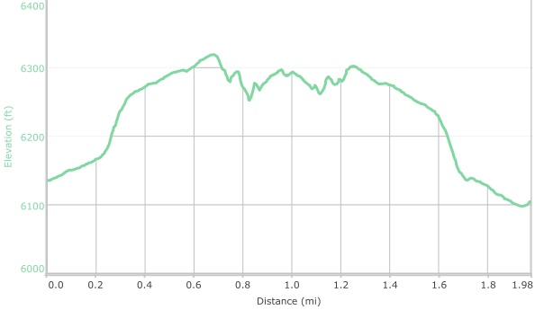

Hike New Mexico
w/ Tom & Ken
Purgatory Chasm Trail
| Difficulty | Round-trip | Type | Elev. Chg. | Exposure | Wow Factor | Facilities | Seasons | Get There |
|---|---|---|---|---|---|---|---|---|
| Easy | 2.2 miles | Out-and-back | 200 ft | Fairly shady | Meandering Creek | None | All | Directions |



- Dec 7, 2015: A pleasant discovery behind some rocks
- Dec 7, 2015: Crooked chasm begins
- Dec 7, 2015: A look ahead shows the continuing drainage
- https://www.flickr.com/photos/139088815@N08/27819588491/in/photostream/
- https://www.flickr.com/photos/139088815@N08/27819611461/in/photostream/
- https://www.flickr.com/photos/139088815@N08/27896315895/in/photostream/
Purgatory Chasm is a relatively short and easy trail into a small canyon created by waterflow near Lake Roberts, in the Silver City area. The hike is featured in Hiking New Mexico's Gila Wilderness by Bill Cunningham and Polly Burke. Though not spectacular on a grand scale, it is well worth the hike to this quiet backwater area, and offers solitude and beauty. Because there are other places with this name, searches may lead you to locations in other states, but Explore NM has some useful information about this hike.